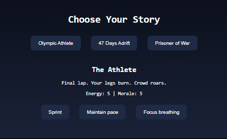

An Olympic WWII Soldier stranded with his friends at sea who then gets captured by the axis powers. This Project is a game like choice driven storytelling done in the browser that has an experience that blends narrative and basic choice making game mechanics to help users feel a slight pressure in high stakes human scenarios. Built using HTML and Javascript on github, 47 days adrift is a simple fun game anyone of any age can play where you can choose between 3 different distinct storylines that showcase a specific world war 2 soldier and olympic athlete named Louis Zamperini.
Message the Work Email to learn more about the framework and pipeline for CG and Marketing.
